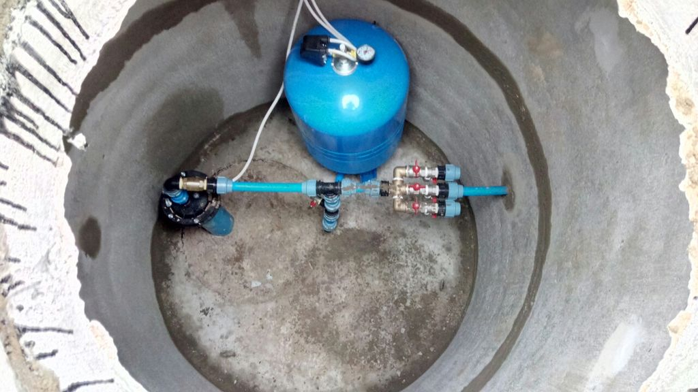

После того, как скважина пробурена и до того, как от неё
будет запитан водопровод в доме, производят обустройство
источника, подбор и установку водоснабжающего оборудования.
Какие задачи решает обустройство водозаборной скважины:
Обеспечение чистоты источника. Нельзя допустить попадания в
скважину загрязнений с поверхности: пыли, дождевых либо талых вод.
Защита источника водоснабжения, оборудования и трубопровода
от замерзания.
Формирование условий для подключения и обслуживания оборудования.
Водоснабжающее оборудование (кроме погружного насоса) может
быть установлено как в доме, так и рядом со скважиной.
В последнем случае необходимо иметь у устья скважины техническое
ещение достаточной площади, где эта техника будет установлена.
Но даже при установке ее в доме иметь небольшое помещение
на выходе трубопровода из скважины весьма удобно, это значительно
облегчает монтаж насоса и его обслуживание. Ввод в скважину
водопроводной трубы, а также подача электропитания для погружного
насоса также производится на стадии обустройства.